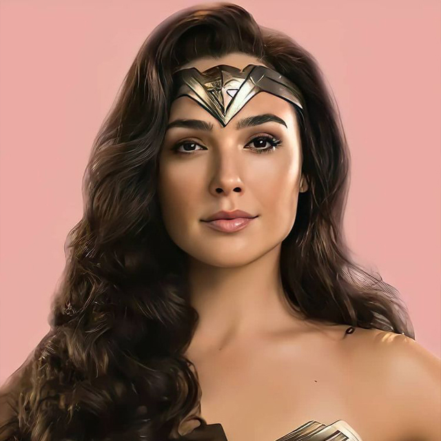

Mujer Maravilla:
La Mujer Maravilla (en inglés: Wonder Woman) es una princesa guerrera de las Amazonas. En su tierra natal es conocida como la princesa Diana de Temiscira, pero fuera utiliza la identidad secreta de Diana Prince. Está dotada de una amplia gama de poderes superhumanos y habilidades de combate de batalla superiores, gracias a sus dones obtenidos de los dioses y su amplio entrenamiento. Posee un gran arsenal de armas, incluyendo el Lazo de la Verdad, un par de brazaletes mágicos indestructibles, su tiara (que sirve como arma) y, en la edad de oro, tuvo un avión invisible.